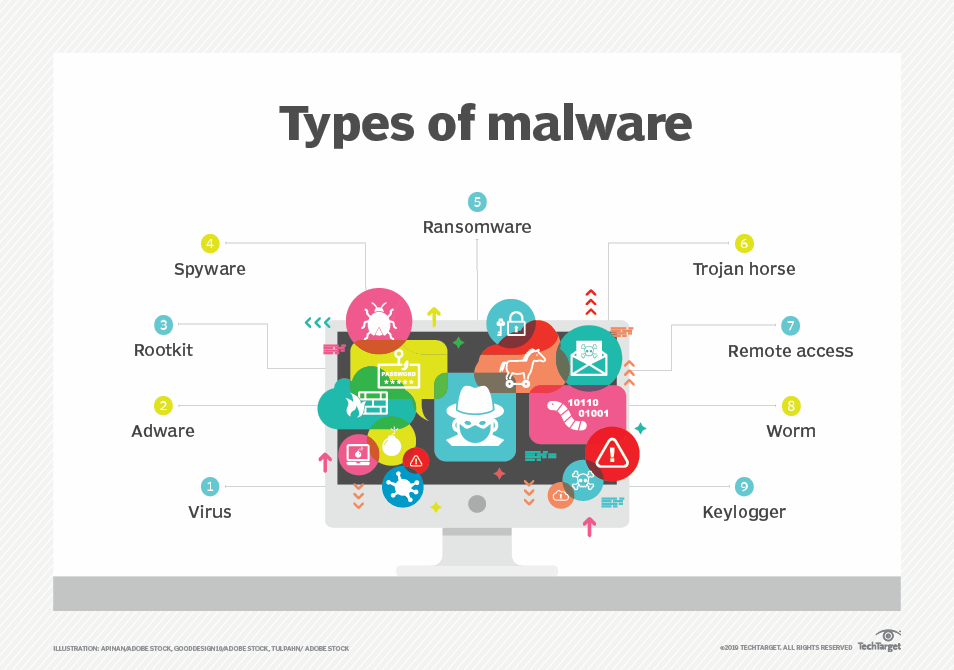

Antivirus is a security program designed to prevent, detect, search, detect and remove viruses and other type of malwares from computers , laptops and secures devices from threat.
Malware
Malware is the catch all term of any type of malicious software designed to harm or exploit any programmable device, service or network
Mostly it is used by the cybercriminals to steal the personal data and the bank credentials . By getting control over a wide range of devices the tendency of service attacks against other networks is done.

Identification of Malware
Due to the malware present the performance of the system slows down.
When we work on with the browser and browser directs us to somewhere we are not interested in..
Frequent pop up ads.
Mostly when we work on some of the websites we are frequently advised to identify the infections and etc…
Remaining un updated towards the latest software
Action against Malware
Limitation of the apps by uninstalling the unused apps.
Staying updated towards the latest system updates.
If at all we are instructed to install something as we get as warning while using any app must not be considered.
Visit only the app stores or the official websites to install.
Do not leave your devices unattended due to any of the reasons.
Action of Malware
Removes malware
Monitors the behaviour
Firewalls
Signature detection
Parental controls
Secure browser
System scans
web monitoring
Data safety
Let’s focus on one of the key factor Firewall and understand it much more better…
Firewall
Firewall is a network security device that prevents unauthorized access to a network. It inspects the traffic using a set of rules and blocks threats . It is used in Windows , Linux and Mac Operating System.
Focus of Firewall
Firewalls can be used as physical hardware , digital software , software as a service(SaaS) or virtual private cloud.
It is a defence against external threat using IPS(Intrusion Prevent System).
It is an border between external and network it guards . Used for both personal and private matters.
Secures against sources of threat defence, logging and audit function , traffic filtering of networks used , controlling and blocking access , secure access and also remote access.
An Intrusion Prevent System monitors network traffic for potential threats and automatically blocks malicious activities.
Pop-ups
Pop up is a window that automatically appears(“pops up”) on a website while user is browsing, often by itself. Pop ups commonly contain advertising but can contain adverting but can also show errors and notifications can be sign up forms. Pop ups are added with a setup code and inserted into website’s html.
How to block Pop ups
Steps to block a Pop – up:
Open “Chrome”.
On the top right corner click upon “Settings”.
Go to the “Privacy and Security”.
Site settings > Pop ups > Redirects.
Choose the default setting what you want to change.
Google Chrome blocks pop ups automatically showing up on your screen . When a pop up is blocked, the address bar will be marked as “pop up blocked ” . You can also allow permissions.